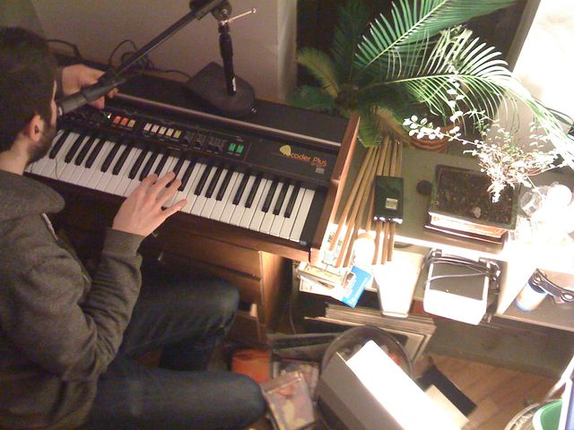

Scheda 043 · 1979 · Hamamatsu, Giappone
Roland VP-330 Vocoder Plus
Un vocoder a dieci bande dentro una tastiera d'archi: la voce robotica degli anni Ottanta nasce qui
Vocoder a dieci bande più synth d'archi e coro sintetico, in una tastiera sola: la voce robotica dei primi anni Ottanta ha questo nome.
- ANNO
- 1979
- COSTRUTTORE
- Roland Corporation
- VOCODER
- 10 bande
- TASTI
- 49
La macchinaChe cos'è
È l'ultimo di una linea di synth d'archi Roland iniziata nel 1975: sopra i tasti aggiunge un vocoder a dieci bande — sette per una voce umana sintetica, dieci per processare quella vera attraverso il microfono incorporato — più due registri di coro sintetico e la sezione archi ereditata dai modelli precedenti. Si suona come una tastiera normale, ma quello che esce, se si parla nel microfono mentre si tengono gli accordi, è la propria voce trasformata in accordo: il suono che negli anni Ottanta si sente da Stevie Wonder a Laurie Anderson.
Chi l'ha costruitaIl reparto R&S di Roland
Il VP-330 chiude una linea di sintetizzatori d'archi che Roland apre nel 1975 con l'RS-101: ogni modello aggiunge qualcosa, e nel 1979 il VP-330 ci mette sopra un vocoder completo, da cui il nome «Vocoder Plus». Costa 2.695 dollari, una cifra alta per l'epoca, e resta in listino solo un anno, fino al 1980, prima di essere sostituito. Nonostante la vita commerciale breve — ne restano pochi, e valgono più oggi che nel 1979 — diventa lo strumento con cui più produttori associano il suono vocoder dei primi anni Ottanta.
Come funzionaCosa c'è dentro
Il microfono incorporato cattura la voce e la scompone in dieci bande di frequenza; ogni banda controlla, in tempo reale, l'ampiezza della banda corrispondente di un suono sintetico generato dai synth d'archi interni. Il risultato è la voce che «parla» attraverso un accordo, invece che attraverso le corde vocali. Volendo, si può ignorare il microfono e usare solo la sezione «Human Voice», sette bande fisse che imitano un coro senza bisogno di parlare.
Chi l'ha usataNei dischi
- Stevie WonderCanta l'intera ultima strofa di «I Just Called to Say I Love You» (1984) attraverso il vocoder del VP-330
- Laurie AndersonLa voce filtrata di «O Superman» (1981) passa dal vocoder del VP-330, con gli archi sintetici che entrano a metà pezzo
- VangelisLo usa per il coro sintetico di «Chariots of Fire» e per «Tears in Rain» nella colonna sonora di Blade Runner
Da ascoltare
Laurie Anderson, «O Superman» (1981)
Otto minuti su un accordo che oscilla fra La bemolle e Do minore: il vocoder VP-330 entra sulla voce fin dal primo verso.
L'aneddotoUna storia
Nel 2020 il produttore Koz mette le mani su un VP-330 appena comprato: prima ancora di sapere cosa farci, la sezione Human Voice con l'ensemble acceso e il portamento premuto diventa l'apertura di «Levitating» di Dua Lipa. Quarant'anni dopo il debutto, lo stesso circuito che faceva cantare Stevie Wonder apre una hit pop del 2020.
Avvertenze
La mia voce non è la mia: è la vostra, passata per dieci filtri e un accordo. Parlate chiaro, o canterò quello che dite male.
Il carosello
Le 6 tavole


Da dove viene
Fonti
- «Roland VP-330» — Wikipedia (EN) verificata il 2026-09-22
- «5 songs that use Roland's classic VP-330 Vocoder Plus» — MusicRadar verificata il 2026-09-22
- «Roland VP-330 - figurehead of the Vocoder Hype» — GreatSynthesizers verificata il 2026-09-22
Foto: ghostdad · CC BY-SA 2.0 · Wikimedia Commons